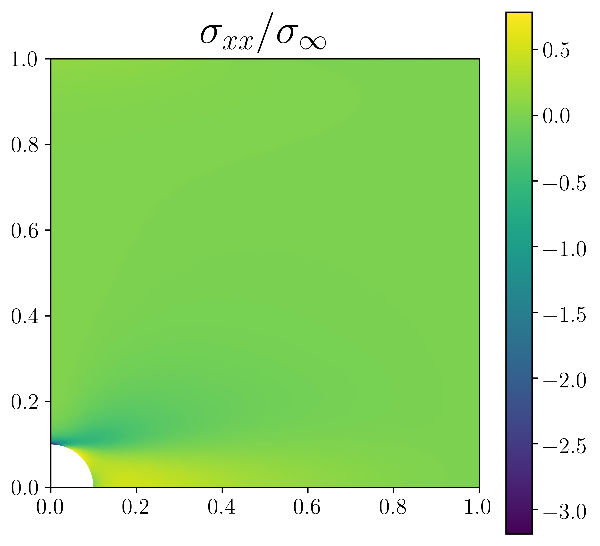
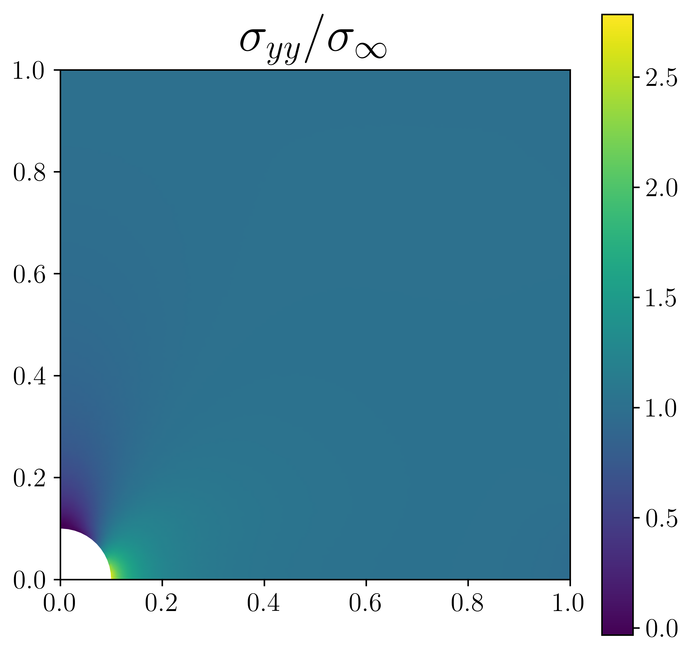

Orthotropic linear elasticity¶
Introduction¶
In this numerical tour, we will show how to tackle the case of orthotropic elasticity (in a 2D setting). The corresponding file can be obtained from
orthotropic_elasticity.py.
We consider here the case of a square plate perforated by a circular hole of
radius \(R\), the plate dimension is \(2L\times 2L\) with \(L \gg R\)
Only the top-right quarter of the plate will be considered. Loading will consist
of a uniform traction on the top/bottom boundaries, symmetry conditions will also
be applied on the correponding symmetry planes. To generate the perforated domain
we use here the mshr module and define the boolean “minus” operation
between a rectangle and a circle:
from fenics import *
from mshr import *
L, R = 1., 0.1
N = 50 # mesh density
domain = Rectangle(Point(0.,0.), Point(L, L)) - Circle(Point(0., 0.), R)
mesh = generate_mesh(domain, N)
Constitutive relation¶
Constitutive relations will be defined using an engineering (or Voigt) notation (i.e. second order tensors will be written as a vector of their components) contrary to the 2D linear elasticity example which used an intrinsic notation. In the material frame, which is assumed to coincide here with the global \((Oxy)\) frame, the orthotropic constitutive law writes \(\boldsymbol{\varepsilon}=\mathbf{S} \boldsymbol{\sigma}\) using the compliance matrix \(\mathbf{S}\) with:
with \(E_x, E_y\) the two Young’s moduli in the orthotropy directions, \(\nu_{xy}\) the in-plane Poisson ration (with the following relation ensuring the constitutive relation symmetry \(\nu_{yx}=\nu_{xy}E_y/E_x\)) and \(G_{xy}\) being the shear modulus. This relation needs to be inverted to obtain the stress components as a function of the strain components \(\boldsymbol{\sigma}=\mathbf{C}\boldsymbol{\varepsilon}\) with \(\mathbf{C}=\mathbf{S}^{-1}\):
Ex, Ey, nuxy, Gxy = 100., 10., 0.3, 5.
S = as_matrix([[1./Ex,nuxy/Ex,0.],[nuxy/Ex,1./Ey,0.],[0.,0.,1./Gxy]])
C = inv(S)
Note
Here we used the inv opertor to compute the elasticity matrix \(\mathbf{C}\).
We could also have computed analytically the inverse relation. Note that the inv
operator is implemented only up to 3x3 matrices. Extension to the 3D case yields 6x6
matrices and therefore requires either analytical inversion or numerical inversion
using Numpy for instance (assuming that the material parameters are constants).
We define different functions for representing the stress and strain either as second-order tensor or using the Voigt engineering notation:
def eps(v):
return sym(grad(v))
def strain2voigt(e):
"""e is a 2nd-order tensor, returns its Voigt vectorial representation"""
return as_vector([e[0,0],e[1,1],2*e[0,1]])
def voigt2stress(s):
"""
s is a stress-like vector (no 2 factor on last component)
returns its tensorial representation
"""
return as_tensor([[s[0],s[2]],[s[2],s[1]]])
def sigma(v):
return voigt2stress(dot(C,strain2voigt(eps(v))))
Problem position and resolution¶
Different parts of the quarter plate boundaries are now defined as well as the
exterior integration measure ds:
class Top(SubDomain):
def inside(self, x, on_boundary):
return near(x[1],L) and on_boundary
class Left(SubDomain):
def inside(self, x, on_boundary):
return near(x[0],0) and on_boundary
class Bottom(SubDomain):
def inside(self, x, on_boundary):
return near(x[1],0) and on_boundary
# exterior facets MeshFunction
facets = MeshFunction("size_t", mesh, 1)
facets.set_all(0)
Top().mark(facets, 1)
Left().mark(facets, 2)
Bottom().mark(facets, 3)
ds = Measure('ds')[facets]
We are now in position to define the variational form which is given as in 2D linear elasticity, the linear form now contains a Neumann term corresponding to a uniform vertical traction \(\sigma_{\infty}\) on the top boundary:
# Define function space
V = VectorFunctionSpace(mesh, 'Lagrange', 2)
# Define variational problem
du = TrialFunction(V)
u_ = TestFunction(V)
u = Function(V, name='Displacement')
a = inner(sigma(du), eps(u_))*dx
# uniform traction on top boundary
T = Constant((0, 1e-3))
l = dot(T, u_)*ds(1)
Symmetric boundary conditions are applied on the Top and Left boundaries
and the problem is solved:
# symmetry boundary conditions
bc = [DirichletBC(V.sub(0), Constant(0.), facets, 2),
DirichletBC(V.sub(1), Constant(0.), facets, 3)]
solve(a == l, u, bc)
import matplotlib.pyplot as plt
p = plot(sigma(u)[1,1]/T[1], mode='color')
plt.colorbar(p)
plt.title(r"$\sigma_{yy}$",fontsize=26)
The \(\sigma_{xx}\) and \(\sigma_{yy}\) components should look like that:
 {kind=link}
{kind=link}